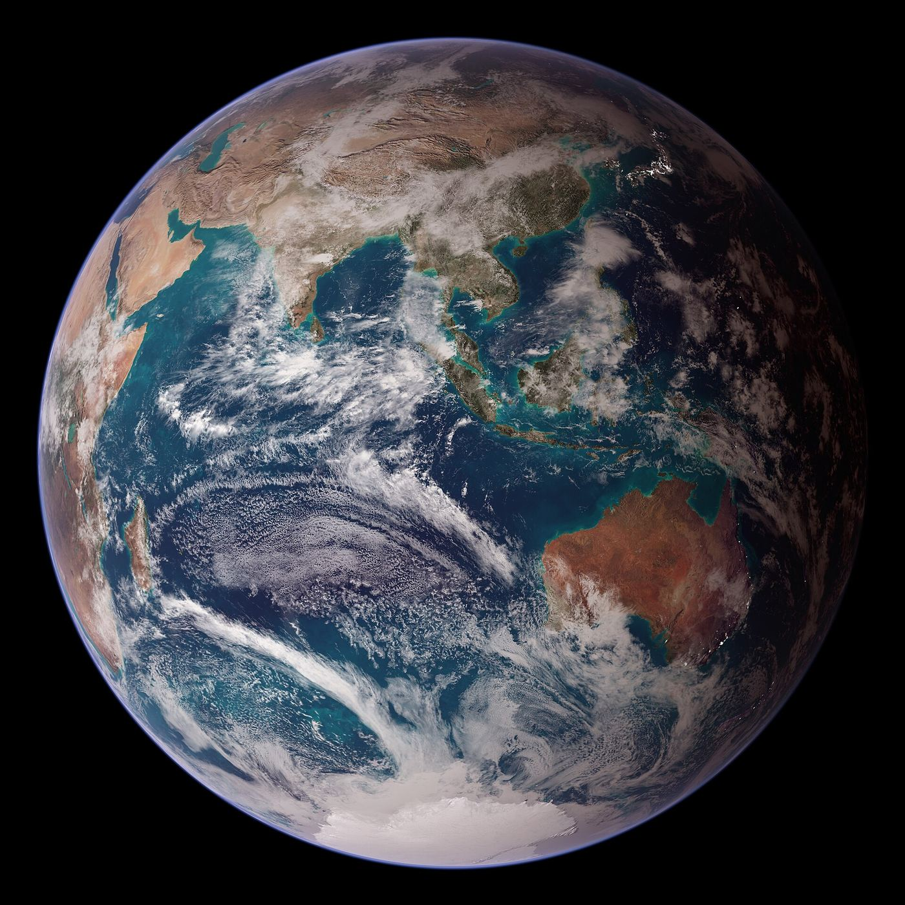
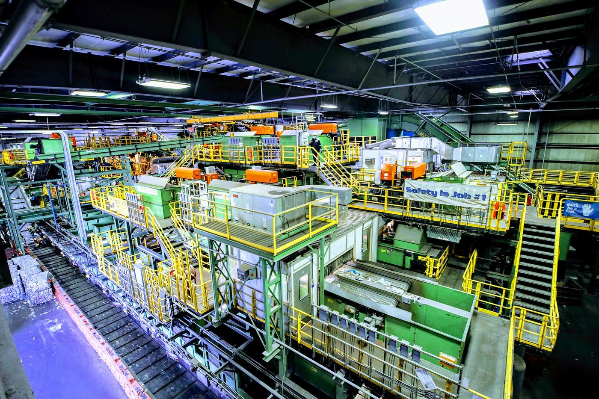
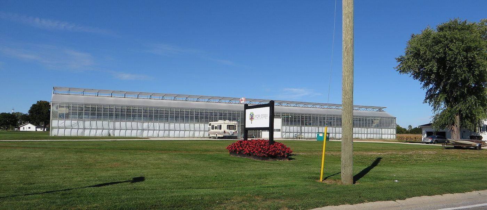

Module 4: Sustainability, Environment & Resource Productivity
Human population and industrial output are expanding against the finite reality of Earth's biosphere. Explore the critical thresholds, economic models, and resource recovery systems necessary to maintain balance on an interconnected planet.
Drag to orbit — the circular resource loop, live 3D

Sustainability Foundations
The history and definitions of sustainability, carrying capacity, and how global systems are deeply interconnected.
Explore Foundations →Interactive Labs
Test your knowledge of the Five R's and experiment with the Tragedy of the Commons in interactive simulations.
Open Labs →The Five R's & Recovery
Understanding resource productivity, Walter Stahel's four pillars, and navigating toxicity in a circular economy.
Study Recovery →Economics & Tipping Points
The behavioral economics of the environment: Affluenza, the Prisoners' Dilemma, and sustainable economic systems.
Examine Economics →Food Systems
The logistics of farm-to-table agriculture and how satellite monitoring helps meet the massive 2050 production challenge.
View Food Systems →Water Resources
Understanding your water footprint, the difference between physical and economic water scarcity, and the global drinking deficit.
Dive Into Water →Sustainability Foundations
Before we can address environmental crises, we must understand our fundamental relationship with the planet.
The recognition that our lives depend on the natural world and that we must protect it. Development that meets the needs of the present without compromising the ability of future generations to meet their own needs.
Earth's systems are heavily integrated. A change in one country can trigger shifts across the rest of the world, demonstrating that our planet is fundamentally interconnected.
The scientific field that studies how living things interact with each other and their physical environments.
In the 1970s, global awareness regarding environmental limits accelerated dramatically. Two major milestones define this era:
The twenty-six principles agreed upon internationally as essential in preserving and enhancing the human environment.
The report commissioned by the Club of Rome that explored future scenarios based on exponential consumption rates against finite planetary limits.
Earth is a finite system. Carrying capacity refers to the maximum number of people (or organisms) that the Earth can sustainably support based on available resources.
Interactive Labs
Apply foundational concepts dynamically before diving deeper into specific resource management systems.
Lab 1: The Five R's Sorting Game
Sort the real-world scenario into its correct Five R's category before your streak breaks.
Loading scenario...
Lab 2: The Tragedy of the Commons & Tipping Points
Observe what happens when self-interested actors deplete a shared resource. Keep the green pasture healthy, but watch what happens when too many farmers add cows without limits.
The Five R's & Resource Recovery

The Five R's provide a framework for individuals and industries to shift away from extractive consumer models.
- Repair: Diana uses patches of fabric to cover up the holes in her couch.
- Recycle: Bruce donates his old books to a company that reprocesses paper.
- Redistribute: Clark moves excess rocks from the construction site to help repair a sea wall (relocating surplus raw materials to a functional site, distinct from simple reuse).
Moving from individual choices to industrial scales requires engineered recovery systems.
The method of converting waste into electricity or raw materials for industry.
Industrial ecologist Walter Stahel established four pillars of sustainability focusing on circular mechanics. Resource productivity refers to how resources are used and how we can get the most out of our physical materials.
A pillar of sustainability that refers to regulating noxious byproducts of our economic activities to ensure the health and safety of people and animals.
Toxicity remains a massive challenge. Consider these two critical facts:
- Since the Toxic Substances Control Act of 1976, only about 20,000 chemicals produced in the United States have been tested by the EPA.
- To modernize safety testing, Thomas Hartung is leading a team to develop a way to map the molecular pathways of toxicity in cells.
Economics, Behavior & Tipping Points
Environmental choices are deeply tied to human psychology and economic incentives.
Deficiency needs result in an unpleasant feeling, illness, or survival consequence if they are not met (like food, water, or shelter). Conversely, being needs stem from a desire to grow as a person and expand human potential.
When humans act out of uncoordinated self-interest, ecosystems suffer.
The game-theory analogy developed by Albert W. Tucker that shows the negative consequences of choosing to act out of self-interest rather than cooperation.
A psychological and cultural term that refers to the excessive consumption, consumer debt, and environmental waste associated with modern industrial culture.
To combat the Tragedy of the Commons and Affluenza, alternative economic systems have been proposed.
An economic system concerned with maintaining a constant level in the number of people and the quantity of goods, avoiding endless growth on a finite planet.
An economic system that encourages areas not to deplete their own resources in order to export them or ignore their local resources in favor of importing.
Food Systems & Agriculture

All of the biological, logistical, and industrial processes involved in moving a crop from farm to table.
Agricultural techniques that are ecologically safe, economically feasible, and socially responsible.
As the global population approaches 9 billion, agricultural researchers expect that food production will need to increase by 70% to sustain the global population in 2050.
Managing this 70% growth requirement means utilizing advanced monitoring technologies.
The advanced satellite imagery technology that allows NASA scientists to monitor global vegetation health and forecast the global food supply in real time.
Water Resources & Scarcity
The total volume of freshwater consumed and polluted directly and indirectly to produce goods and services. Note that while turbines, agriculture, and hydropower all require significant water usage, windmills are NOT an element for water usage.
Water scarcity manifests in distinct forms:
Imagine a thirsty student who goes to a vending machine to buy a drink, but the vending machine is empty. This analogy represents economic water scarcity—freshwater exists globally, but localized infrastructure, funding, or distribution blocks access.
The global reality of this crisis is stark:
Module 4 Exam Simulator
This self-marking exam simulator draws 20 random questions from our comprehensive 134-question question bank covering every Module 4 concept. Click an answer to receive immediate feedback.
If you want to know more about this, visit these sites.
- Explore interactive ecological footprint calculators and biocapacity simulations: Global Footprint Network: Ecological Footprint Calculator (Confidence: High based on training data)
- Review international environmental policy declarations and UN sustainability targets: United Nations Sustainable Development Goals (SDGs) Portal (Confidence: High based on training data)
- Investigate satellite Earth observation data, agricultural monitoring, and climate metrics: NASA Earth Observatory: Global Maps & Vegetation Index (Confidence: High based on training data)
- Examine water footprints, global hydrological data, and resource scarcity analysis: Water Footprint Network Educational Hub (Confidence: High based on training data)
- Learn more about industrial ecology, circular economies, and resource productivity: Ellen MacArthur Foundation: Circular Economy Learning Hub (Confidence: High based on training data)
- Access introductory environmental science lessons and ecological models: Khan Academy: Ecology & Environmental Science (Confidence: High based on training data)